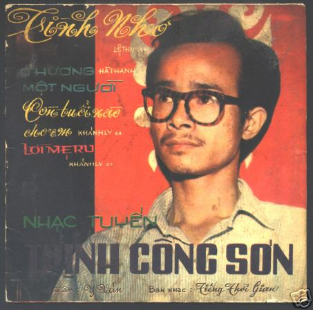

Trong nhiều ca khúc của nhạc sĩ Trịnh Công Sơn về quê hương, thân phận, tình yêu, ngoài vô số những ẩn dụ về sự mong manh, cõi vô thường, sức mạnh của lời ru... có một hình ảnh khi thì thấp thoáng, khi thì trực diện trong nhạc của ông, như một ám ảnh. Đó là ám ảnh phố, một cõi riêng của Trịnh Công Sơn. Những phố trong âm nhạc của Trịnh Công Sơn dường như chính là nơi chốn hẹn gặp của ông với những người nghe nhạc ông.
Nhưng trước hết, phố trong âm nhạc Trịnh Công Sơn là nơi hẹn gặp của những người tình.
Một ngày kia, người tình trong một ca khúc của Trịnh Công Sơn tìm về nơi hẹn xưa trong Khói trời mênh mông: “Ta về nơi đây. Phố xưa dấu đạn. Gió trời lênh đênh. Nhớ con phố hẹn...”. Phố là nơi những người tình xưa theo lối kỷ niệm tìm về. Cho dù có thể là em không còn đó, nhưng dư hương của những ngày cũ thì vẫn còn đây trong Hoa vàng mấy độ: “Một thoáng hương bay, bên trời phố hạ”. Có thế chỉ là một thoáng gặp tình cờ, thời gian trôi đi không thể níu kéo những kỷ niệm cũ, cái còn lại chỉ là một hình ảnh rực rỡ: “Em cười đâu đó, trong lòng phố xá đông vui”. Kỷ niệm là mong manh, nhưng chính cái mong manh ấy, biết đâu lại làm nên sức nặng của kỷ niệm.
Phần lớn trong hành trang những tình khúc của Trịnh Công Sơn nặng một chữ "chia xa”. Và dĩ nhiên, phố là nơi chứng kiến những cuộc chia xa ấy. Lý do nhiều khi chỉ là chuyện thường nhật mà khiến cho những ngày Yêu dấu tan theo: “Em theo đời cơm áo, mai ra cùng phố xôn xao”. Có khi chỉ là một lời chào thật nhẹ nhõm trong Quỳnh hương: “Thôi chào em, về giữa phố xá thênh thang”. Nhưng có khi cũng chẳng vì một lý do gì, chẳng một ai có lỗi mà vẫn phải xa nhau. Chỉ còn lại một người trong một Đêm thấy ta là thác đổ, chợt nhớ đóa hoa tường vi, vậy mà "Bàn tay ngắt hoa từ phố nọ, giờ đây đã quên vườn xưa". Và bởi không còn người xưa cho nên: “Chiều một mình qua phố, âm thầm nhớ nhớ tên em”. Nỗi nhớ quặn thắt ấy chỉ có ở nơi những người biết rằng cuộc tình mình đã vĩnh viễn ra đi không bao giờ trở lại. Chiều một mình qua phố là một trong số ít ca khúc mà Trịnh Công Sơn viết trực tiếp về phố và chỉ còn lại một người... Không chỉ có Anh cảm thấy đau mà Em cũng trống vắng trên phố khi chỉ còn lại một mình, khi bỗng nhiên Nghe những tàn phai: “Chiều nay em ra phố về. Thấy đời mình là những đám đông. Người chia tay nhau cuối đường”. Đó là cái cảm xúc thường thấy khi chỉ vắng đi một người mà bỗng thấy Bên đời hiu quạnh: “Giật mình nhìn quanh, ở phố xa lạ”.
Nhưng phố cũng là nơi mời gọi những con người mỏi mệt trở về. Những ca khúc về thân phận con người của Trịnh Công Sơn thấp thoáng hình ảnh phố như một nơi chốn mà con người có thể tìm thấy một chút bình yên. Đó là "Về trong phố xưa tôi nằm. Có lần nghe tiếng ru bên vườn” và “Nhiều đêm muốn quay về ngồi yên dưới mái nhà” trong Lời thiên thu gọi. Đó cũng là cái cảm quan hết sức lạ lùng: "Trời đất kia có hay ta về. Một phố hồng, một phố hư không". Cùng với cái cảm quan Nghiêng này mà qua ca từ của Trịnh Công Sơn, phố đã mang một linh hồn: "Ngày thu đông, phố xưa nằm bệnh. Đàn chim non, réo bên vườn hoang”. Như vậy, phố không còn là phố nữa rồi!
Không chỉ mong manh hư ảo, phố trong âm nhạc Trịnh Công Sơn đôi khi cũng thật cụ thể nơi những miền đất mà ông đặt chân qua. Khi Nhìn những mùa thu đi, có thể thấy những phố nhỏ của thành phố quê hương ông, nơi có "Gió heo may đã về, chiều tím loang vỉa hè". Về trên phố cao nguyên ngồi gợi nhớ những phố núi Bảo Lộc nơi Trịnh Công Sơn đã có một thời dạy học với bước chân của những nàng Ơ Bai... nhưng đậm hơn cả là những đường phố của Huế, Sài Gòn và Hà Nội, một nơi mà Trịnh Công Sơn đang sống và một nơi ông có nhiều kỷ niệm. Em còn nhớ hay em đã quên những đường phố của Sài Gòn, hỡi người đã ra đi? Những con đường nằm nghe nắng mưa ấy đã quen bàn chân em qua và gọi em trở lại. Gọi em trở lại còn là một cơn mưa bất chợt của Sài Gòn, hay cơn mưa dầm dề của Huế ngày trước đã là cơn cớ để chúng mình đứng chung dưới một mái phố nào đó: “Trong lòng phố mưa đêm trói chân. Dưới hiên nhìn nước dâng tràn. Phố bỗng là dòng sông uốn quanh"... Còn đối với Hà Nội, thành phố mà đôi lần ông ghé chân qua, Trịnh Công Sơn cũng có những hoài niệm về "Cây bàng lá đỏ, nằm kề bên nhau, phố xưa nhà cổ, mái ngói thâm nâu". Những hoài niệm ấy trỗi dậy khi thu về và nhẹ như gió thoảng: “Mùa cốm xanh về, thơm bàn tay nhỏ, cốm sữa vỉa hè, thơm bước chân qua”. Chỉ là một cảm nhận ước lệ, không rõ ràng, mà cũng khó có thể giải thích một cách ngọn ngành, thế nhưng bao giờ người Hà Nội vẫn nhận ra đó chính là vỉa hè của Hà Nội mà thôi. Như một họa sĩ tài ba, Trịnh Công Sơn cũng xuất thần khi ông vẽ phố Hà Nội bằng ngọn bút thuỷ mạc trong Đoản khúc thu Hà Nội: “Nhoà phố mong manh, nhoè phố mưa”. Chỉ một người yêu phố Hà Nội lắm mới có được cái nét vẽ thần sầu ấy!
Không như nhiều nhạc sĩ khác, Trịnh Công Sơn thường tự viết lấy ca từ cho các ca khúc của mình, chỉ trừ một hai bài phổ thơ của Bùi Giáng và của Trịnh Cung bạn ông. Bởi vậy mà có thể nói rằng thế giới phố trong các ca khúc của Trịnh Công Sơn là do chính ông sáng tạo ra. Họa sĩ Bùi Xuân Phái, qua tranh ông, đã tự mình tạo ra một phố thứ 37 của Hà Nội mang tên Phố Phái. Trịnh Công Sơn, bằng âm nhạc của mình, cũng đã sáng tạo ra một Phố Trịnh trong cái vũ trụ nhạc đa diện đa chiều của ông. Như một tài năng, vốn dĩ rất hiếm hoi trong cuộc đời này, Trịnh Công Sơn đã làm được cái điều mà rất ít người làm được: mỗi người đều có thể tìm thấy trong phố của ông, phố của riêng mình!.